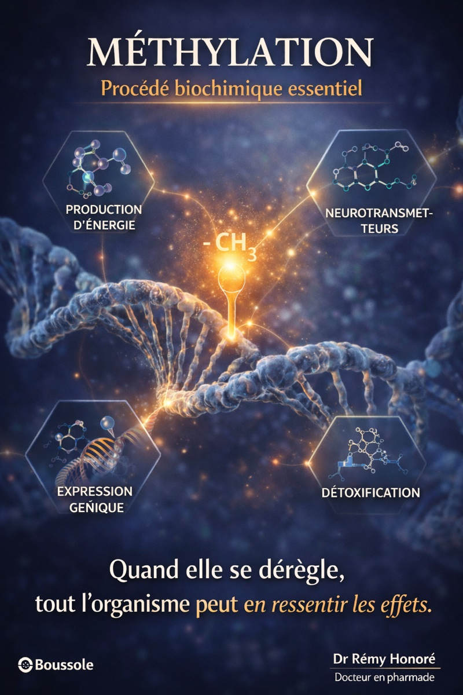

Methylation et cerveau : quand un deficit invisible deregle tout

Tu manges correctement, tu dors suffisamment — du moins tu essaies —, tu limites les efforts. Et malgré tout, le brouillard mental persiste, la fatigue revient chaque matin, le sommeil reste fragile. Et si ces symptômes en apparence distincts avaient une origine commune ?
Un carrefour metabolique silencieux, rarement explore en consultation : la methylation.
La methylation, c'est quoi concretement ?
La methylation est un processus biochimique fondamental qui se deroule des milliards de fois par seconde dans chaque cellule du corps. Son principe est simple : transferer un petit groupe chimique — un groupe methyle (CH₃) — d'une molecule a une autre. Ce transfert active ou desactive des genes, fabrique des neurotransmetteurs, repare l'ADN, elimine des toxines et produit de l'energie.
Le carburant central de ce systeme s'appelle la SAMe (S-adenosylmethionine). C'est le donneur universel de groupes methyle dans l'organisme. Quand le pool de SAMe diminue, c'est toute une cascade de fonctions qui se degrade — et le cerveau est en premiere ligne.[1]
Cinq voies se disputent le meme reservoir
Le pool de SAMe n'est pas illimite. Cinq grandes voies metaboliques puisent dedans en permanence, et quand l'une consomme trop, les autres manquent :
Creatine (GAMT) — 40% du pool
Le plus gros poste de depense. La creatine fournit de l'energie rapide au cerveau, aux muscles et au coeur sous forme de phosphocreatine. Quand l'alimentation n'en apporte pas assez, le corps doit la fabriquer — en puisant massivement dans le pool SAMe.[2]
Phosphatidylcholine (PEMT) — ~30% du pool
Indispensable a l'integrite des membranes cellulaires, au transport des graisses hors du foie et a la synthese de l'acetylcholine — le neurotransmetteur de l'attention, de la memoire de travail et de la contraction musculaire.[3][4]
COMT — Dopamine et noradrenaline
Cette enzyme a besoin de SAMe pour metaboliser les catecholamines. Pool bas = troubles de l'humeur, de la motivation ou hypersensibilite au stress.
HNMT — Histamine cerebrale
L'histamine dans le cerveau regule l'eveil et l'excitabilite neuronale. Sans groupes methyle, l'histamine s'accumule : insomnie, hyperreactivite sensorielle, anxiete inexpliquee.
Melatonine — Rythme circadien
La derniere etape de la synthese de melatonine a partir de la serotonine necessite une methylation. Pool SAMe bas = endormissement difficile malgre la fatigue.
La creatine : le poste de depense qu'on sous-estime
Quand on parle de methylation, on pense souvent aux vitamines B et au MTHFR. Mais le levier le plus simple et le plus immediat est souvent ignore : la creatine alimentaire.
En apportant directement de la creatine par l'alimentation (viande rouge, poisson, volaille) ou par une supplementation en creatine monohydrate, on evite au corps de mobiliser 40% de son pool SAMe pour en fabriquer. Ce faisant, on libere des groupes methyle pour la synthese de neurotransmetteurs, la production de phosphatidylcholine, la degradation de l'histamine et la fabrication de melatonine.[5]
En apportant directement creatine (viande, poisson, supplementation) et choline (oeufs, foie) par l'alimentation, on evite au corps de mobiliser ~70% du pool SAMe pour fabriquer ces molecules. On libere ainsi des groupes methyle pour des fonctions critiques : neurotransmetteurs, methylation de l'ADN, detoxification (glutathion), melatonine.
Le meme raisonnement s'applique a la choline : les oeufs, le foie et la lecithine de soja apportent de la choline preformee, ce qui epargne la voie PEMT et libere encore davantage de SAMe pour les autres fonctions.
Les signaux qui peuvent alerter
Certains signes, pris isolement, semblent banals. Mais leur association peut orienter vers un deficit de methylation :
Ces signaux ne sont pas des preuves — ils sont des pistes a explorer avec un professionnel de sante.
Prudence avec les complements : l'exemple du nicotinamide
La methylation est un systeme d'equilibre. Vouloir l'optimiser avec des complements sans comprendre les interactions peut produire l'effet inverse.
Un exemple concret : le nicotinamide (vitamine B3, precurseur du NAD+) connait un engouement important pour ses effets sur l'energie cellulaire et le vieillissement. A court terme, la relance du NAD+ peut effectivement ameliorer l'energie et la cognition. Mais a doses elevees et prolongees, le nicotinamide doit etre degrade — et cette degradation consomme des groupes methyle. Au fil des mois, le pool SAMe s'appauvrit silencieusement.[6]
J'ai moi-meme experimente cette situation avec l'association Seroplex (escitalopram) et Nicobion (nicotinamide 500 mg). Au depart, l'effet etait benefique — meilleure energie, relance perceptible. Au bout de plusieurs mois d'association, sont apparus des signes d'hyperexcitabilite corporelle croissante qui ont conduit a l'arret de l'un des deux. Ce type de reaction differee est caracteristique de l'epuisement progressif du pool SAMe par le nicotinamide.
Un complement peut etre benefique a court terme et deletere a long terme si le terrain de methylation n'est pas evalue. Toute supplementation a haute dose doit etre encadree par un professionnel de sante.
Pistes nutritionnelles a explorer
Plusieurs cofacteurs soutiennent le cycle de methylation. Leur pertinence depend du terrain individuel et doit etre evaluee au cas par cas :
La niacine (vitamine B3) a haute dose consomme des groupes methyle pour sa propre degradation. Une supplementation inadaptee en niacine peut aggraver un deficit de methylation existant.[9]
Examens pour explorer cette piste
Homocysteine plasmatique — marqueur indirect de l'efficacite du cycle de methylation.
Folates erythrocytaires — reflet du statut reel en folates, plus fiable que les folates seriques.
Vitamine B12 active (holotranscobalamine) — forme biodisponible de la B12.
Bilan hepatique — la steatose peut etre un signe indirect de deficit en choline/methylation.
Ces examens peuvent etre demandes par un medecin ou un pharmacien biologiste. Ils ne confirment pas a eux seuls un deficit de methylation, mais ils orientent la reflexion.
Suivre l'impact avec Boussole
Si tu explores une approche nutritionnelle ciblant la methylation, suis chaque jour ton energie, ton sommeil, ton confort physique et ta clarte mentale. C'est une information concrete a partager avec ton professionnel de sante.
Faire ma saisie du jourSources scientifiques
- Bekdash RA. Int J Mol Sci. 2023 — Methyl Donors, Epigenetic Alterations, and Brain Health: Understanding the Connection ↩
- Brosnan JT, da Silva RP, Brosnan ME. J Nutr. 2011 — The metabolic burden of creatine synthesis (creatine uses ~40% of available methyl groups) ↩
- Zeisel SH. Nutrients. 2017 — Choline, Other Methyl-Donors and Epigenetics ↩
- Zeisel SH. Curr Opin Clin Nutr Metab Care. 2013 — Choline's role in maintaining liver function: new evidence for epigenetic mechanisms ↩
- Azzini E et al. Nutrients. 2020 — B-Vitamins and One-Carbon Metabolism: Implications in Human Health and Disease ↩
- Li D et al. Biomolecules. 2020 — Possible Adverse Effects of High-Dose Nicotinamide: Mechanisms and Safety Assessment ↩
- Pham-Huy LA et al. Hypertens Res. 2012 — Excess nicotinamide inhibits methylation-mediated degradation of catecholamines in normotensives and hypertensives
- Tian YJ et al. Sheng Li Xue Bao. 2013 — Excess nicotinamide increases plasma serotonin and histamine levels
- Zhou SS et al. Clin Nutr. 2017 — Comparison of the effects of nicotinic acid and nicotinamide degradation on plasma betaine and choline levels
- Mahmoud AM et al. Nutrients. 2021 — Early Life Nutrition and Mental Health: The Role of DNA Methylation